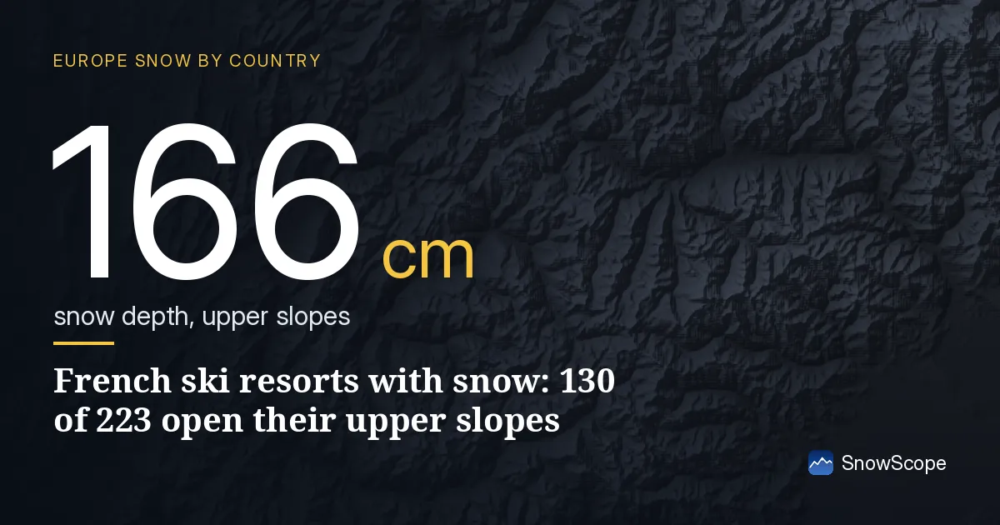

French ski resorts with snow: 130 of 223 open their upper slopes
More than half of France's ski resorts now have snow on their upper slopes. As of 20 November, 130 of 223 resorts measured snow cover, with the Mont Blanc massif and northern Alps receiving exceptional amounts over the past three days.
See the live snow forecast for Les Arcs in the SnowScope appSnow depth, powder alerts and the 3D map, free.
Which resorts have snow and where
Snow cover across French ski terrain is still patchy at lower elevations. Only 14 percent of the mapped mountain area holds snow, but the distribution tells a clear story: above 2000 m, snow is becoming reliable. At 2000 to 2500 m, the mean depth is 17 cm and 73 percent of the terrain is covered. Above 2500 m, depths average 46 cm across 95 percent of the slopes.
In practical terms, this means upper lifts and high-altitude runs are ready on 130 resorts, while lower slopes remain thin or bare. The snow line sits around 1700 m today. Les Arcs leads with 166 cm at its peak, followed by Orelle and Val Thorens at 145 cm each. These high-altitude resorts have received substantial fresh snow: Orelle and Val Thorens both recorded 143 cm in the past three days.
| Resort | Snow depth | New snow, 72 h | Coming, next days | Top |
|---|---|---|---|---|
| Les Arcs | 166 cm | 134 cm | 77 cm | 3,205 m |
| Orelle | 145 cm | 143 cm | 92 cm | 3,221 m |
| Val Thorens | 145 cm | 143 cm | 92 cm | 3,221 m |
| La Plagne | 144 cm | 125 cm | 77 cm | 3,058 m |
| Paradiski | 135 cm | 126 cm | 75 cm | 3,205 m |

Where the snow fell hardest
The Mont Blanc massif has captured the heaviest precipitation over 72 hours: 297 cm. This exceptional amount reflects the collision of moist air with the highest terrain in the Alps. The northern French Alps received 180 cm, while the southern Alps saw 124 cm. These totals are measurements from our snow model, which estimates snow depth across each mountain area, not readings at a single point.
The Mont Blanc massif and northern Alps are your best bet for deep, stable snow right now. Orelle, Val Thorens, and Les Arcs all sit in or near these zones and show the deepest pack. Snow began falling yesterday, 21 November, adding to what fell from 18 to 20 November.

Snow depth by elevation band
The elevation bands show why water storage in the high Alps is building fast. Below 1500 m, snow cover is rare: 0 cm at 500 to 1000 m, and only 1 cm average at 1000 to 1500 m with just 9 percent cover. The transition zone of 1500 to 2000 m holds 7 cm on average across half the terrain, marking the edge where winter is gaining grip.
Above 2000 m is where snow is accumulating as a water reserve. From 2000 to 2500 m, 17 cm lies on three-quarters of the slopes. Above 2500 m, the snowpack thickens to 46 cm average with near-complete coverage. This layering suggests good base conditions are forming in the high mountains, though the overall area of snow cover remains modest: 12,730 km2 out of 89,350 km2 mapped, or about 14 percent.
What is coming in the next week
The pattern is favourable for more accumulation. Tomorrow, 22 November, is forecast to be the snowiest day, with up to 49 cm possible. Over the next three days, resorts can expect 68 to 92 cm, depending on location: Val Thorens and Orelle may see 92 cm, while Les Arcs and Paradiski could receive around 75 to 77 cm. These are model estimates for typical terrain at each resort.
By the end of next week, the total fresh snow could reach 90 cm in the best areas. After 23 November, snow frequency drops: the following week (28 November to 4 December) shows only 27 cm forecast, suggesting a drier pattern sets in by late November.
How the week has changed the picture
One week ago, only 5800 km2 held snow. Today, that figure has grown to 12,730 km2, a gain of 6930 km2 in seven days. Yesterday to today, an additional 860 km2 became snow-covered. This rapid shift marks the transition from autumn to early winter, driven by the persistent weather system that began on 18 November.
The resort leaders show the intensity. Five days ago, Les Arcs held 94 cm. By yesterday it had grown to 130 cm, then to 166 cm today. Similar growth appears at Orelle and Val Thorens, now at 145 cm each after reaching 111 cm five days ago. This week demonstrates how mountain snowpack can build fast when conditions align.
Bare terrain and risk on lower slopes
Before you ski, remember that rocks and obstacles may still be exposed on many slopes below 2000 m. Only 50 percent of the 1500 to 2000 m band is snow-covered. Lower terrain remains largely bare. If you venture off-piste or into unmarked terrain, check the official avalanche bulletin for your area, as fresh snow on thin old cover can be unstable.
Use the SnowScope map to find the safest riding: stick to upper lifts and high-altitude runs where the snowpack is thick and continuous. The pattern is favourable and more snow is coming, but patience on lower slopes pays off.
Tips for skiers
- Target elevations above 2000 m where snow cover is now complete and depths exceed 17 cm. Resorts in the Mont Blanc massif and northern Alps offer the most reliable conditions.
- If you plan to ski tomorrow or the next two days, expect significant fresh snow. Upper slopes will deepen quickly, but lower runs may remain thin or close temporarily.
- Use official avalanche bulletins when skiing off-piste, especially on steep terrain where fresh snow overlies thin older cover or bare ground.
- Monitor Val Thorens, Orelle, and Les Arcs for the deepest packs and most extensive terrain. Each has absorbed heavy precipitation and sits in high-snow areas.
- Avoid lower elevations below 1500 m for now. Bare patches are common, and rocks are a hazard. Waiting a few days for the next snow pulse may open more lower terrain safely.
About these numbers
Resort snow depths are the deepest snow on the resort's upper slopes from the SnowScope snow model (about 1 km, run of 20 November); they are estimates for an area, not a measurement at one point. Station values are measurements on the date shown. Forecasts can change. Always read the official avalanche bulletin before going off-piste.
Cite this report
For research, teaching or the press: the numbers and charts are free to reuse under CC BY 4.0 with this citation.
SnowScope (2026), French ski resorts with snow: 130 of 223 open their upper slopes, https://snowscope.app/blog/en/2026/11/france-resorts-with-snow-20-november-2026.html, accessed 2026-11-20
SnowScope (Atlas Labs). (2026, November 20). French ski resorts with snow: 130 of 223 open their upper slopes. SnowScope snow reports. https://snowscope.app/blog/en/2026/11/france-resorts-with-snow-20-november-2026.html
BibTeX
@misc{snowscope2026franceresortswithsnow20n,
author = {{SnowScope (Atlas Labs)}},
title = {French ski resorts with snow: 130 of 223 open their upper slopes},
year = {2026},
month = nov,
howpublished = {\url{https://snowscope.app/blog/en/2026/11/france-resorts-with-snow-20-november-2026.html}},
note = {Published 2026-11-21 12:11 UTC; accessed 2026-11-20}
}· CC BY 4.0 · Methods, data and tools →
Les Arcs: snow and temperature by height, this winter vs last (tools) →
Follow Les Arcs
Free: a message when fresh snow is coming, and the forecast every morning.
More snow reports

Savin Kuk above Žabljak picked up 22 cm of snow from 13 to 19 November and still has 6 cm today. Kolašin 1450 and 1600 are bare. The week day by day, and the next chances.

Up to 30 cm of snow fell on northern Velebit and Bjelolasica on Friday 13 November 2026. By Tuesday it was gone. Day by day, what the mountains kept, and when snow comes back.

Only Borovets and Bansko have a trace of snow at the top today, 2 cm each. A week ago Borovets had 11 cm. Day by day, and the one snowy day in the forecast.